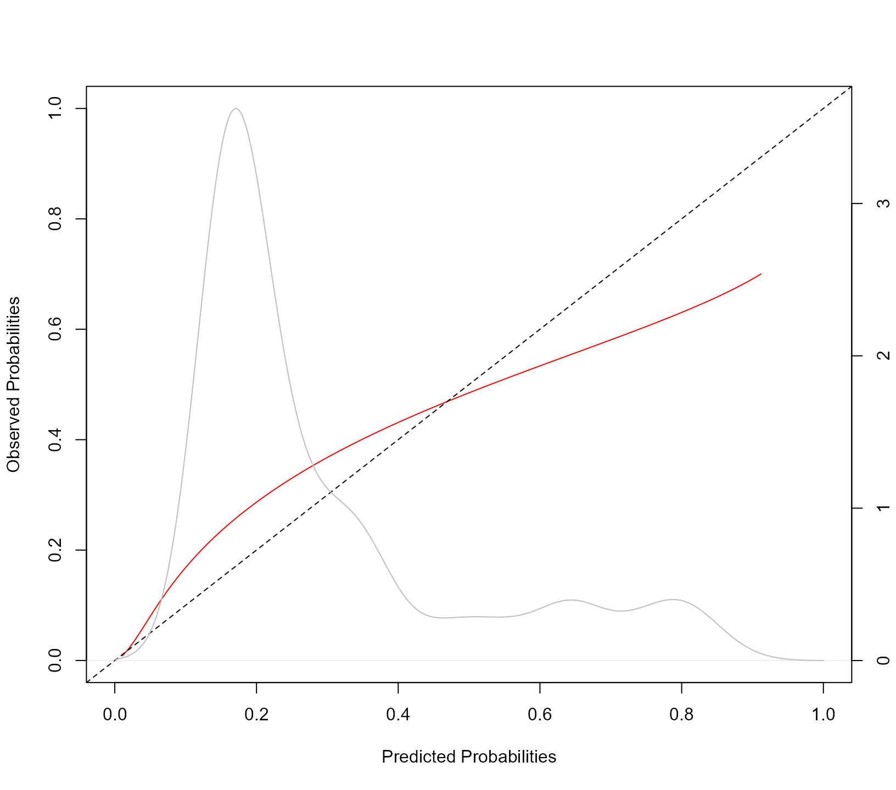

Dynamic Predictions
Dimitris Rizopoulos
2021-12-17
Source:vignettes/Dynamic_Predictions.Rmd
Dynamic_Predictions.RmdDynamic Predictions
Theory
Based on the general framework of joint models presented earlier, we are interested in deriving cumulative risk probabilities for a new subject \(j\) that has survived up to time point \(t\) and has provided longitudinal measurements \(\mathcal Y_{kj}(t) = \{ y_{kj}(t_{jl}); 0 \leq t_{jl} \leq t, l = 1, \ldots, n_j \}\). The probabilities of interest are \[\begin{array}{l} \pi_j(u \mid t) = \mbox{Pr}\{T_j^* \leq u \mid T_j^* > t, \mathcal Y_j(t), \mathcal D_n\}\\\\ = \displaystyle 1 - \int\int \frac{S\{u \mid \mathcal H_j(u, b_j), \theta\}}{S\{t \mid \mathcal H_j(t, b_j), \theta\}} \; p\{b_j \mid T_j^* > t, \mathcal Y_j(t), \theta\} \; p(\theta \mid \mathcal D_n) \; db_j d\theta, \end{array}\] where \(S(\cdot)\) denotes the survival functional conditional on the random effects, and \(\mathcal Y_j(t) = \{\mathcal Y_{1j}(t), \ldots, \mathcal Y_{Kj}(t)\}\). Combining the three terms in the integrand we can device a Monte Carlo scheme to obtain estimates of these probabilities, namely,
Sample a value \(\tilde \theta\) from the posterior of the parameters \([\theta \mid \mathcal D_n]\).
Sample a value \(\tilde b_j\) from the posterior of the random effects \([b_j \mid T_j^* > t, \mathcal Y_j(t), \theta]\).
Compute the ratio of survival probabilities \(S\{u \mid \mathcal H_j(u, \tilde b_j), \tilde \theta\} \Big / S\{t \mid \mathcal H_j(t, \tilde b_j), \tilde \theta\}\).
Replicating these steps \(L\) times, we can estimate the conditional cumulative risk probabilities by \[1 - \frac{1}{L} \sum_{l=1}^L \frac{S \bigl \{u \mid \mathcal H_j(u, \tilde b_j^{(l)}), \tilde \theta^{(l)} \bigr \}}{S \bigl \{t \mid \mathcal H_j(t, \tilde b_j^{(l)}), \tilde \theta^{(l)} \bigr \}},\] and their standard error by calculating the standard deviation across the Monte Carlo samples.
Examples
We will illustrate the calculation of dynamic predictions using package JMbayes2 from a trivariate joint model fitted to the PBC dataset for the longitudinal outcomes serBilir (continuous), prothrombin time (continuous) and ascites (dichotomous). We start by fitting the univariate mixed models. For the two continuous outcomes, we allow for nonlinear subject-specific time effects using natural cubic splines. For ascites, we postulate linear subject-specific profiles for the log odds. The code is:
fm1 <- lme(log(serBilir) ~ ns(year, 3) * sex, data = pbc2,
random = ~ ns(year, 3) | id, control = lmeControl(opt = 'optim'))
fm2 <- lme(prothrombin ~ ns(year, 2) * sex, data = pbc2,
random = ~ ns(year, 2) | id, control = lmeControl(opt = 'optim'))
fm3 <- mixed_model(ascites ~ year * sex, data = pbc2,
random = ~ year | id, family = binomial())Following, we fit the Cox model for the time to either transplantation or death. The first line defines the composite event indicator, and the second one fits the Cox model in which we have also included the baseline covariates drug and age. The code is:
pbc2.id$event <- as.numeric(pbc2.id$status != "alive")
CoxFit <- coxph(Surv(years, event) ~ drug + age, data = pbc2.id)The joint model is fitted with the following call to jm():
We want to calculate predictions for the longitudinal and survival outcomes for Patients 25 and 93. As a first step, we extract the data of these patients and store them in the data.frame ND with the code:
t0 <- 5
ND <- pbc2[pbc2$id %in% c(25, 93), ]
ND <- ND[ND$year < t0, ]
ND$status2 <- 0
ND$years <- t0We will only use the first five years of follow-up year (line three), and further specify that the patients were event-free up to this time point (lines four and five).
We start with predictions for the longitudinal outcomes. These are produced by the predict() method for class jm objects, and follow the same lines as the procedure described above for cumulative risk probabilities. The only difference is in Step 3, where instead of calculating the cumulative risk we calculate the predicted values for the longitudinal outcomes. There are two options controlled by the type_pred argument, namely predictions at the scale of the response/outcome (default) or at the linear predictor level. The type argument controls if the predictions will be for the mean subject (i.e., including only the fixed effects) or subject-specific including both the fixed and random effects. In the newdata argument we provide the available measurements of the two patients. This will be used to sample their random effects at Step 2 presented above. This is done with a Metropolis-Hastings algorithm that runs for n_mcmc iterations; all iterations but the last one are discarded as burn-in. Finally, argument n_samples corresponds to the value of \(L\) defined above and specifies how many iterations from the MCMC sample of the parameters will be used:
predLong1 <- predict(jointFit, newdata = ND, return_newdata = TRUE)Argument return_newdata specifies that the predictions are returned as extra columns of the newdata data.frame. By default the 95% credible intervals are also included. Using the plot() method for objects returned by predict.jm(..., return_newdata = TRUE), we can display the predictions. With the following code we do that for the first longitudinal outcome:
plot(predLong1)
When we want to calculate predictions for other, future time points, we can accordingly specify the times argument. In the following example, we calculate also predictions from time t0 = 7 to time 12:
predLong2 <- predict(jointFit, newdata = ND,
times = seq(t0, 12, length.out = 51),
return_newdata = TRUE)We show these predictions for the second outcome and the second patient (i.e., Patient 93). This is achieved by suitably specifying the outcomes and subject arguments of the plot() method:
plot(predLong2, outcomes = 2, subject = 93)
We continue with the predictions for the event outcome. To let predict() know that we want the cumulative risk probabilities, we specify process = "event":
predSurv <- predict(jointFit, newdata = ND, process = "event",
times = seq(t0, 12, length.out = 51),
return_newdata = TRUE)The predictions are included again as extra columns in the corresponding data.frame. To depict the predictions of both the longitudinal and survival outcomes combined, we provide both objects to the plot() method:
plot(predLong2, predSurv)
Again by default, the plot is for the predictions of the first subject (i.e., Patient 25) and for the first longitudinal outcome (i.e., log(serBilir)). However, the plot() method has a series of arguments that allow users to customize the plot. We illustrate some of these capabilities with the following figure. First, we specify that we want to depict all three outcomes using outcomes = 1:3 (note: a max of three outcomes can be simultaneously displayed). Next, we specify via the subject argument that we want to show the predictions of Patient 93. Note, that for serum bilirubin we used the log transformation in the specification of the linear mixed model. Hence, we receive predictions on the transformed scale. To show predictions on the original scale, we use the fun_long argument. Because we have three outcomes, this needs to be a list of three functions. The first one, corresponding to serum bilirubin is the exp() and for the other two the identity() because we do not wish to transform the predictions. Analogously, we also have the fun_event argument to transform the predictions for the event outcome, and in the example below we set that we want to obtain survival probabilities. Using the arguments bg, col_points, col_line_long, col_line_event, fill_CI_long, and fill_CI_event we have changed the appearance of the plot to a dark theme. Finally, the pos_ylab_long specifies the relative positive of the y-axis labels for the three longitudinal outcomes.
cols <- c('#F25C78', '#D973B5', '#F28322')
plot(predLong2, predSurv, outcomes = 1:3, subject = 93,
fun_long = list(exp, identity, identity),
fun_event = function (x) 1 - x,
ylab_event = "Survival Probabilities",
ylab_long = c("Serum Bilirubin", "Prothrombin", "Ascites"),
bg = '#132743', col_points = cols, col_line_long = cols,
col_line_event = '#F7F7FF', col_axis = "white",
fill_CI_long = c("#F25C7880", "#D973B580", "#F2832280"),
fill_CI_event = "#F7F7FF80",
pos_ylab_long = c(1.9, 1.9, 0.08))#> Warning in min(x): no non-missing arguments to min; returning Inf
#> Warning in max(x): no non-missing arguments to max; returning -Inf
We evaluate the discriminative capability of the model using ROC methodology. We calculate the components of the ROC curve using information up to year five, and we are interested in events occurring within a three-year window. That is discriminating between patients who will get the event in the interval (t0, t0 + Dt], (i.e., in our case \(T_j \in (5, 8]\)) from patients who will survive at least 9 years (i.e., \(T_j > 8\)). The calculations are performed with the following call to tvROC():
pbc2$event <- as.numeric(pbc2$status != "alive")
roc <- tvROC(jointFit, newdata = pbc2, Tstart = t0, Dt = 3)
roc
#>
#> Time-dependent Sensitivity and Specificity for the Joint Model jointFit
#>
#> At time: 8
#> Using information up to time: 5 (202 subjects still at risk)
#>
#> cut-off SN SP qSN qSP
#> 1 0.05 0.02088401 1.00000000 0.01601279 1.000000000
#> 2 0.06 0.04176802 1.00000000 0.03218570 1.000000000
#> 3 0.07 0.08353604 1.00000000 0.06502161 1.000000000
#> 4 0.08 0.08353604 0.99351140 0.06027553 0.737860600
#> 5 0.11 0.11406642 0.99001990 0.08226368 0.712002869
#> 6 0.13 0.11406642 0.98353130 0.07753308 0.584165385
#> 7 0.15 0.13495043 0.98353130 0.09461133 0.630369231
#> 8 0.16 0.15583444 0.98353130 0.11186748 0.667332308
#> 9 0.17 0.17671845 0.97704270 0.12472172 0.613552173
#> 10 0.18 0.23508351 0.97571075 0.17372657 0.672904828
#> 11 0.21 0.25596751 0.97571075 0.19196472 0.693348277
#> 12 0.24 0.29773553 0.96922216 0.22482283 0.672782917
#> 13 0.25 0.31861954 0.96922216 0.24374257 0.689143771
#> 14 0.32 0.32463354 0.96460209 0.24627611 0.659505800
#> 15 0.33 0.34551755 0.96460209 0.26552525 0.674982809
#> 16 0.35 0.38728557 0.95811349 0.30074398 0.661556992
#> 17 0.36 0.40816958 0.95811349 0.32074008 0.674574031
#> 18 0.37 0.42905359 0.95811349 0.34096471 0.686626844
#> 19 0.39 0.44069777 0.94875411 0.34694191 0.643045835
#> 20 0.40 0.44768137 0.93794669 0.34755343 0.595652622
#> 21 0.44 0.46856538 0.93794669 0.36853063 0.608288477
#> 22 0.48 0.48944939 0.93794669 0.38975607 0.620158523
#> 23 0.50 0.48944939 0.93145809 0.38612367 0.592780420
#> 24 0.51 0.51033340 0.93145809 0.40770866 0.604415265
#> 25 0.52 0.51900839 0.92766479 0.41469696 0.594119074
#> 26 0.53 0.51900839 0.92117619 0.41114967 0.569664586
#> 27 0.56 0.52764816 0.91737194 0.41820079 0.560766622
#> 28 0.58 0.54853217 0.91737194 0.44051226 0.572029016
#> 29 0.60 0.56941618 0.91088334 0.45976440 0.560937430
#> 30 0.61 0.56941618 0.89141754 0.44950676 0.501507810
#> 31 0.62 0.61697656 0.88672861 0.50083397 0.513174042
#> 32 0.63 0.62061694 0.88137107 0.50236768 0.500769917
#> 33 0.66 0.62408123 0.87595882 0.50368895 0.488646544
#> 34 0.67 0.62408123 0.86947022 0.50042374 0.472659673
#> 35 0.68 0.64874945 0.86415736 0.52698259 0.472303587 *
#> 36 0.70 0.64904562 0.85127218 0.52099470 0.443647785
#> 37 0.71 0.64904562 0.83829498 0.51443298 0.416706900
#> 38 0.72 0.64904562 0.81882919 0.50424626 0.379720261
#> 39 0.73 0.64904562 0.81234059 0.50075504 0.368213306
#> 40 0.74 0.64904562 0.80585199 0.49721429 0.357083629
#> 41 0.75 0.66365575 0.79092551 0.50767001 0.340108655
#> 42 0.76 0.68453976 0.78443692 0.53144876 0.340246317
#> 43 0.77 0.68698030 0.77221799 0.52813449 0.323353432
#> 44 0.78 0.69351380 0.74829353 0.52376759 0.293823506
#> 45 0.79 0.69431676 0.73556581 0.51759364 0.278166125
#> 46 0.80 0.76418745 0.71834283 0.60955627 0.288815640
#> 47 0.81 0.77031183 0.70077986 0.61010915 0.271777480
#> 48 0.82 0.79119584 0.68780266 0.63639275 0.266699265
#> 49 0.83 0.81377977 0.66886502 0.66413852 0.256785941
#> 50 0.84 0.81956117 0.63821829 0.65935848 0.230737842
#> 51 0.85 0.82270555 0.61324084 0.65229631 0.210855053
#> 52 0.86 0.82754738 0.59527939 0.65164571 0.198494476
#> 53 0.87 0.84843139 0.58879079 0.68758307 0.201305188
#> 54 0.88 0.85382554 0.54504654 0.67552482 0.172066682
#> 55 0.89 0.85885815 0.52065576 0.67229134 0.158021430
#> 56 0.90 0.86224997 0.46980080 0.64777842 0.129266358
#> 57 0.91 0.88448231 0.45075393 0.68887235 0.126396007
#> 58 0.92 0.90765547 0.43199936 0.73727332 0.124151688
#> 59 0.93 0.93018114 0.38060063 0.77252565 0.106295192
#> 60 0.94 0.93214700 0.32281403 0.74139047 0.081935793
#> 61 0.95 0.93218464 0.25145113 0.67384041 0.054957050
#> 62 0.96 0.93535741 0.15510791 0.51637763 0.024753134
#> 63 0.97 0.97846247 0.03872855 0.37848832 0.004221366
#> 64 0.98 1.00000000 0.01297720 1.00000000 0.003106970In the first line we define the event indicator as we did in the pbc2.id data.frame. The cut-point with the asterisk on the right maximizes the Youden’s index. To depict the ROC curve, we use the corresponding plot() method: 
The area under the ROC curve is calculated with the tvAUC() function:
tvAUC(roc)
#>
#> Time-dependent AUC for the Joint Model jointFit
#>
#> Estimated AUC: 0.8052
#> At time: 8
#> Using information up to time: 5 (202 subjects still at risk)This function either accepts an object of class tvROC or of class jm. In the latter case, the user must also provide the newdata, Tstart and Dt or Thoriz arguments. Here we have used the same dataset as the one to fit the model, but, in principle, discrimination could be (better) assessed in another dataset.
To assess the accuracy of the predictions we produce a calibration plot: 
The syntax of the calibration_plot() function is almost identical to that of tvROC(). The kernel density estimation is of the estimated probabilities \(\pi_j(t + \Delta t \mid t) = \pi_j(8 \mid 5)\) for all individuals at risk at year t0 in the data frame provided in the newdata argument. Using the calibration_metrics() function we can also calculate metrics for the accuracy of predictions:
calibration_metrics(jointFit, pbc2, Tstart = 5, Dt = 3)
#> ICI E50 E90
#> 0.04776743 0.02707094 0.12397622The ICI is the mean absolute difference between the observed and predicted probabilities, E50 is the median absolute difference, and E90 is the 90% percentile of the absolute differences. Finally, we calculate the Brier score as an overall measure of predictive performance. This is computed with the tvBrier() function:
tvBrier(jointFit, newdata = pbc2, Tstart = t0, Dt = 3)
#>
#> Prediction Error for the Joint Model jointFit
#>
#> Estimated Brier score: 0.1317
#> At time: 8
#> Using information up to time: 5 (202 subjects still at risk)Notes:
- To obtain valid estimates of the predictive accuracy measures (i.e., time-varying sensitivity, specificity, and Brier score) we need to account for censoring. A popular method to achieve this is via inverse probability of censoring weighting. For this approach to be valid, we need the model for the weights to be correctly specified. In standard survival analysis, this is achieved either using the Kaplan-Meier estimator or a Cox model for the censoring distribution. However, in the settings where joint models are used, it is often the case that the censoring mechanism may depend on the history of the longitudinal outcomes in a complex manner. This is especially the case when we consider multiple longitudinal outcomes in the analysis. Also, these outcomes may be recorded at different time points per patient and have missing data. Because of these reasons, in these settings, Kaplan-Meier-based or Cox-based censoring weights may be difficult to derive or be biased. The functions in JMbayes2 that calculate the predictive accuracy measures using joint-model-based weights to account for censoring. These weights allow censoring to depend in any possible manner on the history of the longitudinal outcomes. However, they require that the model is appropriately calibrated.
- The calibration curve, produced by
calibration_plot(), and the calibration metrics, produced bycalibration_metrics()), are calculated using the procedure described in Austin et al., 2020.